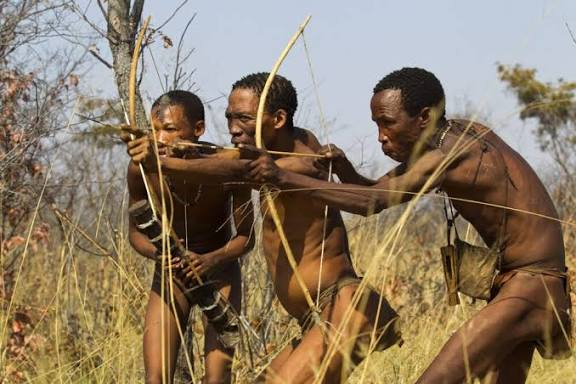
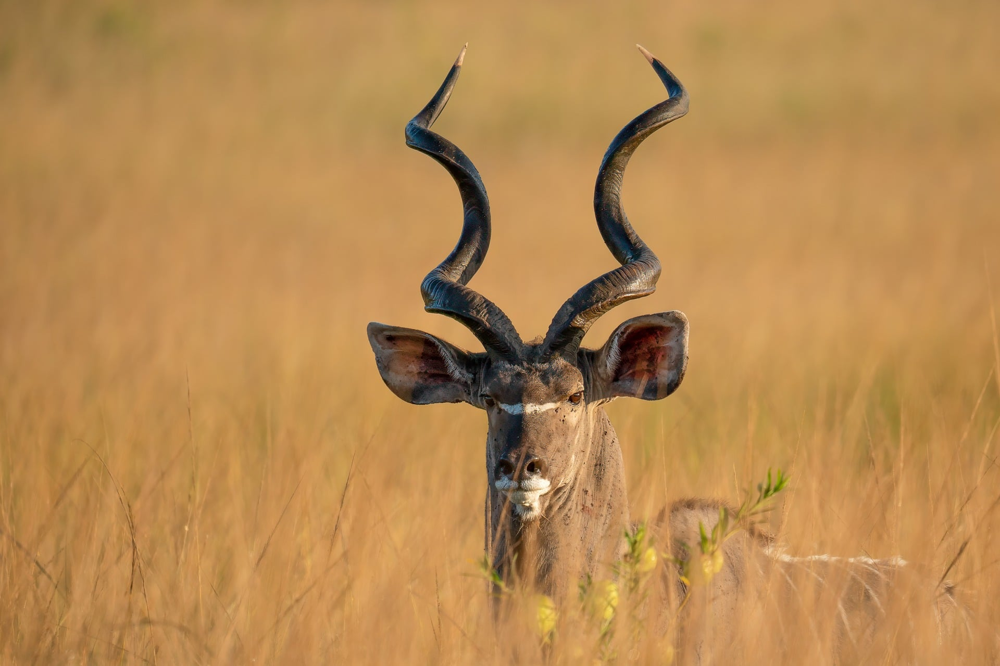

The Foundation of Identity
Our work begins with the acknowledgement of our ancestry and the structural recovery of historical configurations safely within the modern paradigm.
About Us

Our work begins with the acknowledgement of our ancestry and the structural recovery of historical configurations safely within the modern paradigm.

Reclaiming the archives lost to history through scientific onomastics, clarifying traditional lineage frameworks, and stabilizing pre-colonial language matrices.

By building independent institutional blueprints, we ensure that indigenous knowledge systems thrive as functional, relevant pillars for generations to come.